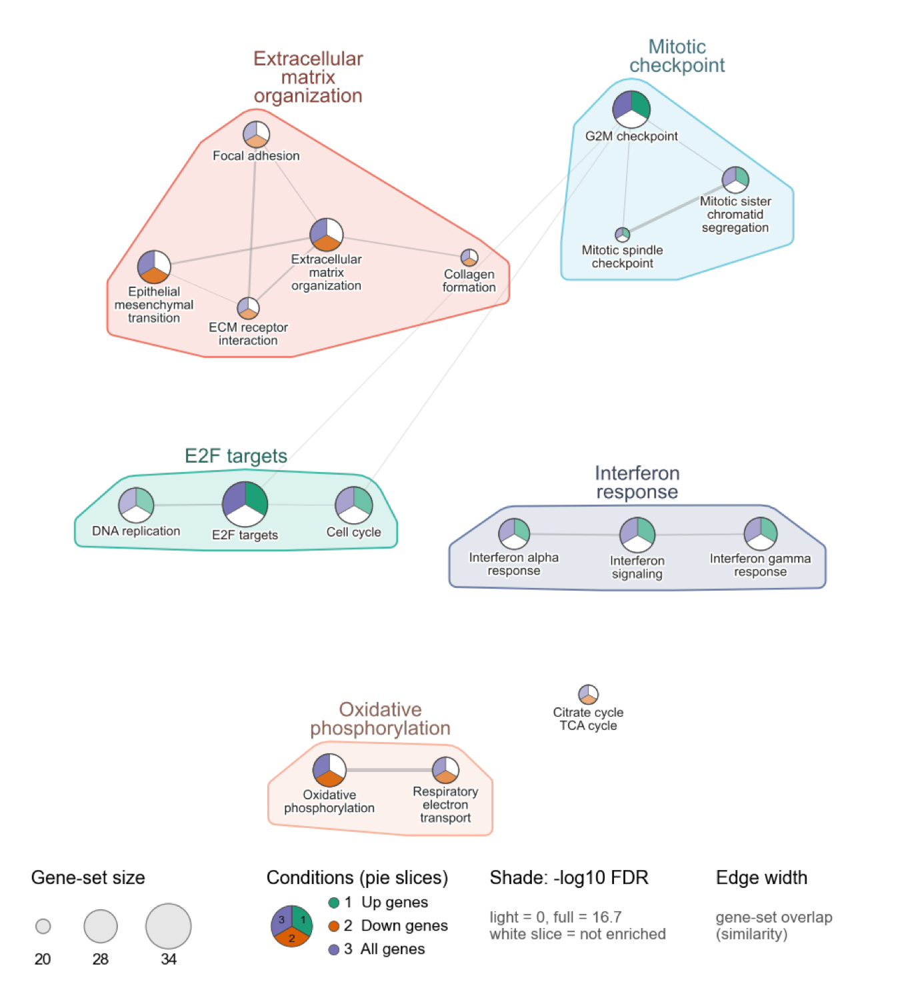
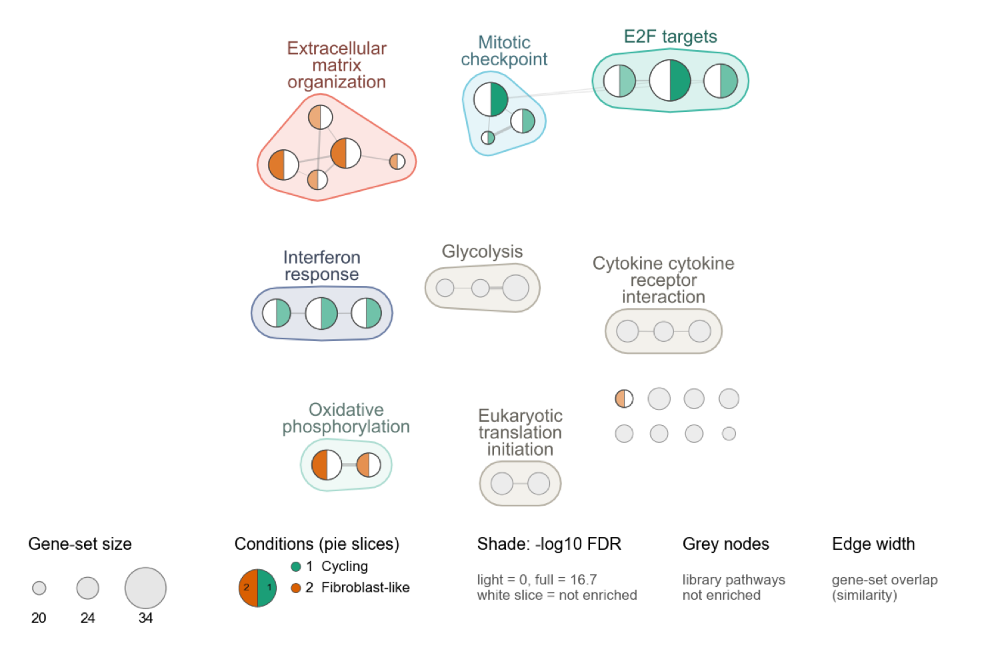
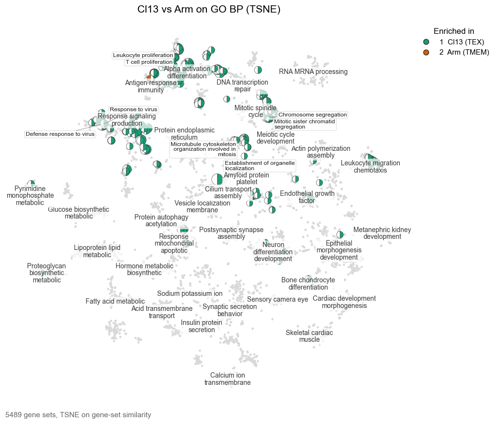

Enrichment maps in one command
Over-representation analysis or preranked GSEA, gene-set similarity, Markov clustering and automatic cluster labels, following EnrichmentMap and AutoAnnotate. No Cytoscape needed.
Open-source Python package
Turn gene lists, ranked scores, or existing enrichment results into annotated pathway and gene networks. Compare conditions and explore their hits across an entire gene-set library.

Over-representation analysis or preranked GSEA, gene-set similarity, Markov clustering and automatic cluster labels, following EnrichmentMap and AutoAnnotate. No Cytoscape needed.
A matching gene network whose modules carry the same labels and colors as the pathway clusters, with genes colored by fold change.
Contrasts, time points or single-cell clusters in one network. Each pathway is a pie chart with one slice per condition.
Every gene set of a library on a fixed 2-D map, so results from different experiments share the same coordinates.
Tutorials

From a gene list to a pathway network, one step at a time.

Rank all measured genes and color the network by enrichment score.

Several gene lists in one network, with pie-chart nodes.

From a Seurat or scanpy marker table to one slice per cell cluster.

A full comparison on real data: exhausted versus memory CD8 T cells.

Place a whole gene-set library on a fixed map and draw every analysis on it.
Worked example
Follow the Cl13 vs Arm tutorial to compare two gene lists on a shared t-SNE or UMAP map. In the interactive example, search for a pathway, select groups with the lasso, and inspect enrichment statistics and overlapping genes.
Read the tutorial
Install from GitHub and run the bundled demo. It generates an enrichment table, network figures, and an interactive HTML viewer.
git clone https://github.com/helenhuangmath/SimpNetworkViz.git
cd SimpNetworkViz
python -m pip install -e .
snv demo